HP3PAR Installation and Deployment with Integration of Packstack-10/RHOSP-10/RHOSP-13
Tested and working on all above Openstack Environemnt.
Warning
For RHOSP-13, HP3Par lefthand is not supported as its a containerized environment. There are some tweak to make it work.
We will not take you throught the process of Packstack-10/OSP10/13 installation.
What's included
- Hp3Par Installtion on KVM
- Static IP Configuration of Hp3Par
- CMC Installtion on Lubuntu (as CMC required GUI, we decided to take light weight GUI)
- Connect CMC with Hp3Par
- User Management, RAID Creation,
- Integration of Hp3Par with Openstack (Packstack-10/RHOSP-10 & RHOSP-13)
- Testing
Prerequisites
- To Begin with installation make sure you fulfill the following prerequisites
- Minimum of one node to add into cluster
- Node Specifications: 4Gb RAM, 3*10GB Disk(which should be added once VSA node is ready)
- Hpe LeftHand setup tar file
- HPE_StoreVirtual_KVM_VSA_and_StoreVirtual_FOM_Installer_TA688-10554.tgz
Hp3Par Installation steps
Overview
Install HPE StoreVirtual VSA on ANY new server from ANY server vendor.** StoreVirtual VSA transforms unused capacity inside your servers into a shared storage array.
You get fully featured shared storage without the cost and complexity of dedicated storage hardware.
Register now and try HPE software-defined storage for free for 3 years.
Your license will be activated when you install the software.
NOTE: StoreVirtual VSA performs optimally when you install the same software version on every server in the management group.
Previously installed free versions of StoreVirtual VSA software can be upgraded with the purchase of a full license.
New customers:
Download the latest HPE StoreVirtual Free 1TB VSA
Begin Installation
First Check if you enough space for /var/lib/libvirt/images atleast of 150GB
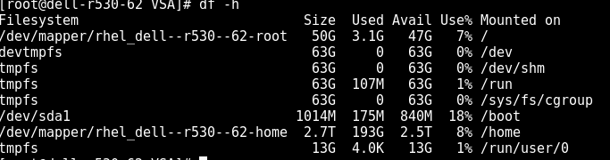
If not check for the size on /home, For example in my case I have only 50GB for my partition and 2.7T on my /home
Create a directory named images inside /home and run all the commands given below
cd /var/lib/libvirt rm -rf images mkdir /home/images chcon -t virt_image_t /home/images ln -s /home/images .Inside /home/images extract your HPE_StoreVirtual_KVM_VSA_and_StoreVirtual_FOM_Installer_TA688-10554.tgz
tar -xvf HPE_StoreVirtual_KVM_VSA_and_StoreVirtual_FOM_Installer_TA688-10554.tgzThen extract KVM-VSA-12.7.00.0226_01.img.tgz which you get after running the above command.
tar -xvf KVM-VSA-12.7.00.0226_01.img.tgz- Open the virt-manager of you base machine.
- Click on File → New Virtual Machine
- Choose Fourth option
Import existing disk imageand then click on Forwad Click on File->New Virtual Machine

Choose Fourth option
Import existing disk imageand then click on Forwad
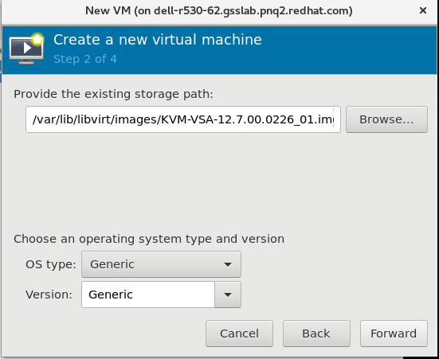
Input the value of ram and cpus
- It will take upto 15 - 20 minutes to setup the machine.
Once you get the login screen type start and press enter, you will get the below screen.

Press Enter to login

Go in Network TCP/IP Settings
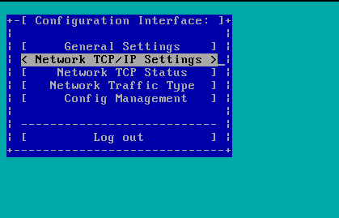
Hit enter and select 2nd option to get ip automatically from dhcp, you can also set ip manual if you want

Press Enter
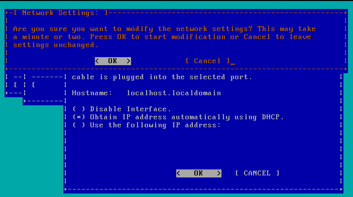
Finally you will get the. This ip needs to be given in CMC which we will see further

CMC Installation steps
- Open your lubuntu session
- Make Sure you have CMC bin file with you
HPE_StoreVirtual_Centralized_Management_Console_for_Linux_64_bit_BM480-10622.bin
- Make Sure you have CMC bin file with you
Run the binary file you will see the following window

- Click on next
Accept the license agreement

Go with typical installation set
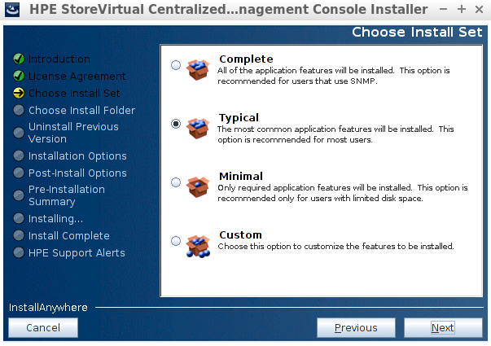
Just go on clicking next
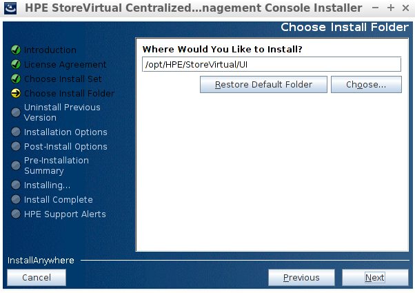
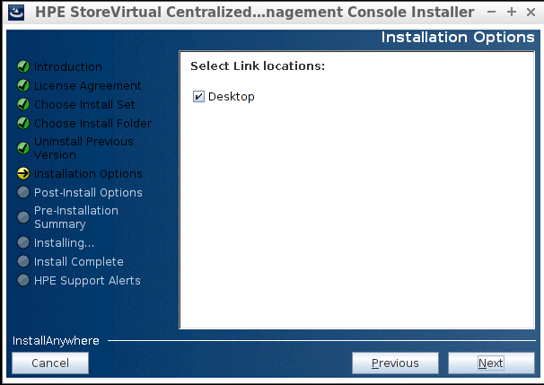


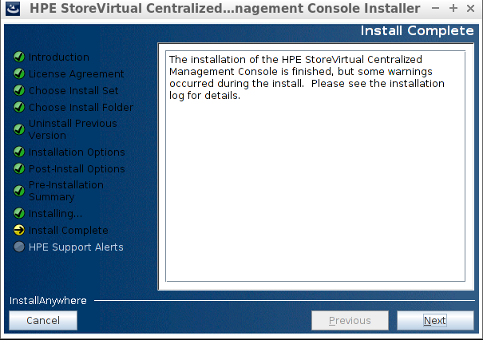
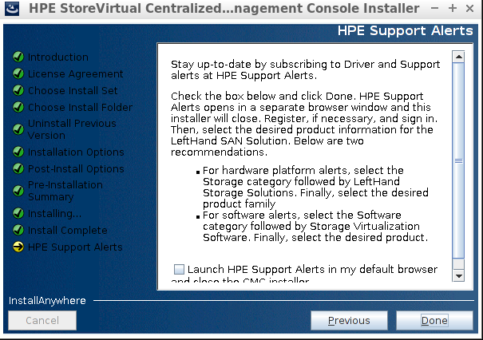
Go to the directory /opt/HPE/StoreVirtual/UI/
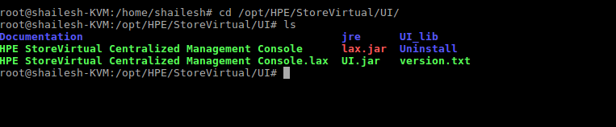
Hit the following command
./HPE\ StoreVirtual\ Centralized\ Management\ ConsoleThe CMC Window will open, it looks like the below figure

Click on Add and enter the VSA node ip address


Now click on
Getting Startedat left side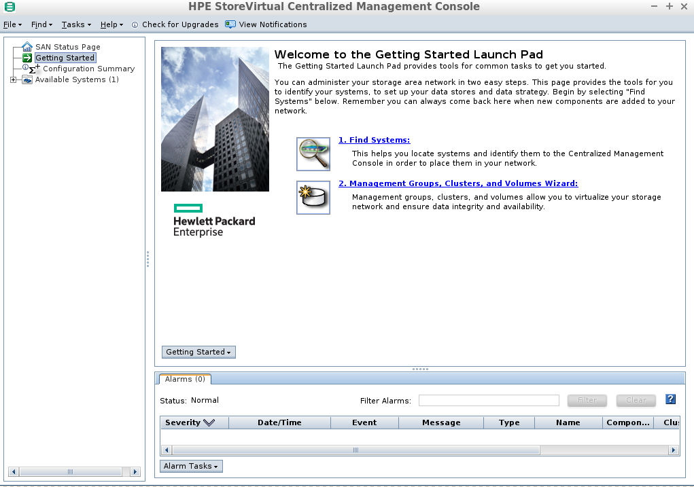
Click next

Create New Management Group

Add management group name

Create user and set password for the user
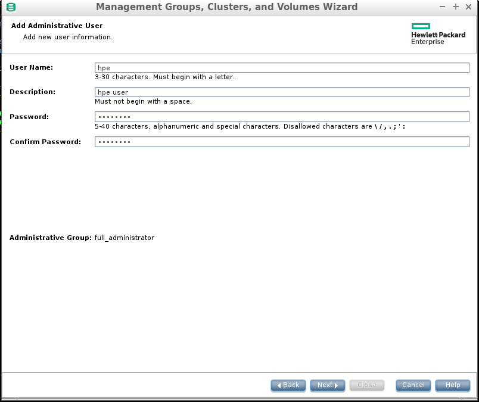
Add ntp server ip address in next window
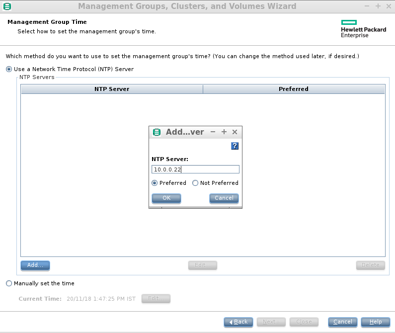

Add DNS Server

Enter the mail server ip address/domain
[Note: In my case I have given dummy information]

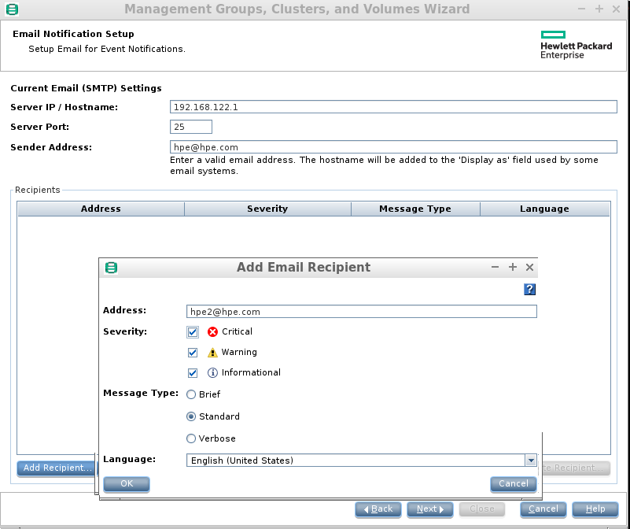
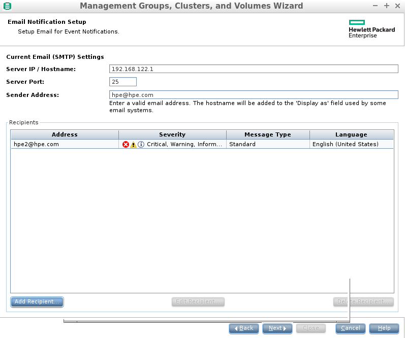
Select the type of cluster I do not have
multi-siteso going forstandard
Enter the Cluster name over there

Now its time to enter the virtual ip, you virtual ip should be reachable from any instance in same network

Enter all the required details

Wait for some time since it takes time to create a management group
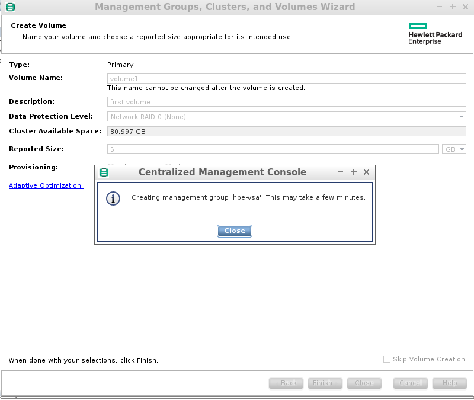
You will get something like this

You can see your cluster at the left side of panel